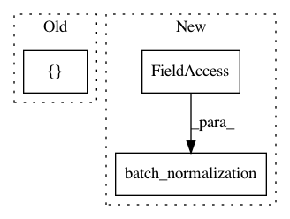

4d6cb5a6ea1fc8632a96591582b88d7088fafbf2,tensorlayer/layers/normalization.py,InstanceNorm,forward,#InstanceNorm#Any#,437
Before Change
def forward(self, inputs):
mean, var = tf.nn.moments(x=inputs, axes=[1, 2], keepdims=True)
outputs = self.scale * tf.compat.v1.div(inputs - mean, tf.sqrt(var + self.epsilon)) + self.offset
outputs = self.act(outputs)
After Change
def forward(self, inputs):
mean, var = tf.nn.moments(inputs, self.axes, keepdims=True)
outputs = batch_normalization(inputs, mean, var, self.beta, self.gamma, self.epsilon, self.data_format)
if self.act:
outputs = self.act(outputs)
return outputs
In pattern: SUPERPATTERN
Frequency: 3
Non-data size: 3
Instances
Project Name: tensorlayer/tensorlayer
Commit Name: 4d6cb5a6ea1fc8632a96591582b88d7088fafbf2
Time: 2019-05-11
Author: yingda.yin@gmail.com
File Name: tensorlayer/layers/normalization.py
Class Name: InstanceNorm
Method Name: forward
Project Name: tensorlayer/tensorlayer
Commit Name: 68bea038ee799cfd4397621fb1f6023b657c2bdf
Time: 2017-01-07
Author: dhsig552@163.com
File Name: tensorlayer/layers.py
Class Name: BatchNormLayer
Method Name: __init__
Project Name: zsdonghao/text-to-image
Commit Name: d42df89c351e0c2a031ea3a9ae17fb7b844e7b79
Time: 2017-01-18
Author: dhsig552@163.com
File Name: tensorlayer/layers.py
Class Name: BatchNormLayer
Method Name: __init__